Guide de première utilisation
Le Client, maître d'ouvrage
Ce qu'il faut faire, et dans quel ordre
| Application | Nourane Génie Civil, gestion des coûts de construction |
| Pour aller plus loin | Manuel du Client |
| Date | Octobre 2026 |
Le Client, maître d'ouvrage
Ce qu'il faut faire, et dans quel ordre
| Application | Nourane Génie Civil, gestion des coûts de construction |
| Pour aller plus loin | Manuel du Client |
| Date | Octobre 2026 |
Le client suit son projet : l'avancement des travaux, le budget, les dépenses et ses propres versements. L'ingénieure crée votre compte et votre projet ; le chef de chantier saisit les dépenses et l'avancement, que l'ingénieure valide avant que vous ne les voyiez. Au tout début du chantier, plusieurs écrans restent donc vides.
Votre seule saisie est la déclaration de vos versements, que l'ingénieure confirme à réception des fonds.
Le schéma de la page suivante montre ces dépendances. Une flèche signifie « doit exister avant ». Les cases en pointillés sont faites par d'autres que vous.

| Pour… | Il faut d'abord… | Où |
|---|---|---|
| Se connecter | Votre compte, créé par l'ingénieure | Connexion |
| Voir votre projet | Être désigné comme client du projet | Mes projets |
| Voir une dépense | Qu'elle soit saisie par le chef, puis validée par l'ingénieure | Dépenses |
| Voir l'avancement et les photos | Des relevés du chef de chantier, validés par l'ingénieure | Avancement |
| Voir un versement « Reçu » | La confirmation de l'ingénieure, après réception des fonds | Mes versements |
| Voir le coût final estimé | Des dépenses et un avancement validés | Tableau de bord |